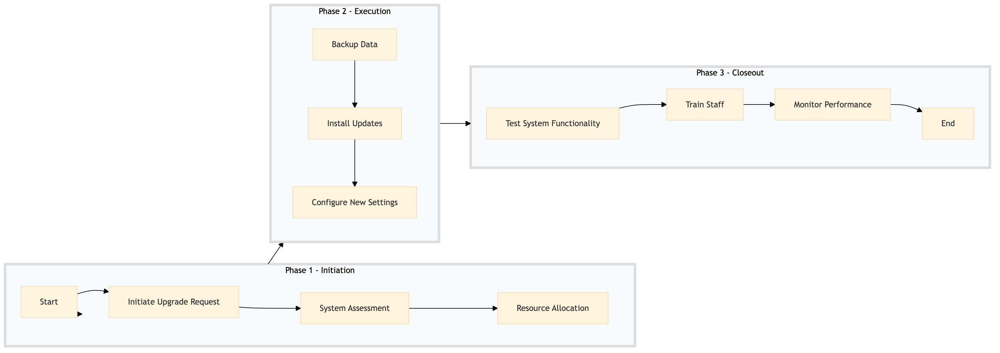

| Role | Steps |
|---|---|
| IT Manager | 1.1 1.3 3.4 |
| IT Specialist | 1.2 2.1 2.2 2.3 3.1 |
| Revenue Manager | 1.3 2.3 3.2 |
| Front Desk Agent | 3.1 |
| Step | Name | Role | System | Input | Output | KPI | Dec? | Exc? | Pain Point / Risk |
|---|---|---|---|---|---|---|---|---|---|
| 1.1 | Initiate Upgrade Request | IT Manager | Oracle OPERA Cloud | Upgrade request form | Approved upgrade plan | Less than 24 hours for approval | Y | N | Delays in IT approvals can halt operational improvements. |
| 1.2 | System Assessment | IT Specialist | Oracle OPERA Cloud, IDeaS G3 RMS | Current system configuration and usage data | Assessment report with upgrade recommendations | Less than 2 days for assessment | Y | N | Inaccurate assessments can lead to ineffective upgrades. |
| 1.3 | Resource Allocation | IT Manager, Revenue Manager | Birchstreet Procurement | Assessment report | Allocated resources and budget for upgrade | Less than 4 days for allocation | Y | N | Insufficient resource allocation can delay upgrades. |
| 2.1 | Backup Data | IT Specialist | Oracle OPERA Cloud, IDeaS G3 RMS | Current system data | Complete backup of all critical data | Less than 1 hour for backup | N | Y | Data loss can lead to operational disruptions. |
| 2.2 | Install Updates | IT Specialist | Oracle OPERA Cloud, IDeaS G3 RMS | Approved upgrade plan | Updated system configuration | Less than 8 hours for installation | N | Y | System downtime can impact guest services. |
| 2.3 | Configure New Settings | IT Specialist, Revenue Manager | Oracle OPERA Cloud, IDeaS G3 RMS | Upgrade recommendations | Configured system settings for optimal performance | Less than 2 days for configuration | N | Y | Misconfigured settings can reduce system efficiency. |
| 3.1 | Test System Functionality | IT Specialist, Front Desk Agent | Oracle OPERA Cloud, IDeaS G3 RMS | Updated system configuration | System functionality test report | Less than 1 day for testing | Y | N | Undetected issues can cause operational failures. |
| 3.2 | Train Staff | IT Specialist, Revenue Manager | Oracle OPERA Cloud, IDeaS G3 RMS | System functionality test report | Trained staff on new system features | Less than 2 days for training | N | Y | Untrained staff can lead to operational inefficiencies. |
| 3.3 | Monitor Performance | IT Specialist, Revenue Manager | Oracle OPERA Cloud, IDeaS G3 RMS | Trained staff | Performance monitoring report | Continuous monitoring for 1 week post-upgrade | Y | N | Post-upgrade performance issues can impact guest satisfaction. |
| 3.4 | Final Review and Documentation | IT Manager, Revenue Manager | Oracle OPERA Cloud, IDeaS G3 RMS | Performance monitoring report | Final review document with recommendations | Less than 1 day for final review | N | Y | Lack of documentation can hinder future upgrades. |
A process to upgrade system administration at a Marriott full-service hotel focusing on front office and guest services, aiming to enhance upselling and revenue optimization.